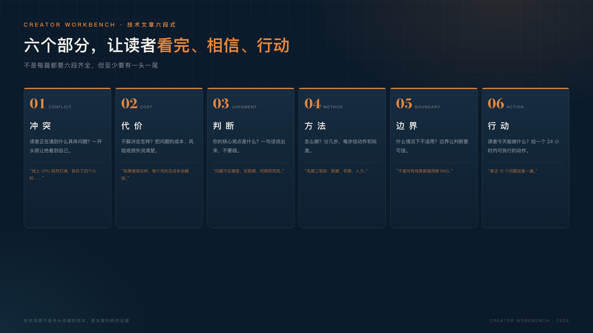

信息密度不等于价值。
读者点开一篇文章，只关心三个问题。
这篇文章只谈写作本身：怎么把一个技术问题讲清楚。不讨论选题、平台和涨粉。
我写了四篇文章之后，发现技术人写作最容易犯的一个错：
把文章写成了说明书。
上来先讲背景、定义、架构、参数、实现细节，最后再加一句“希望对你有帮助”。
作者觉得自己写得很扎实，读者看两段就划走了。
不是内容没价值，是价值没有被翻译成读者能感受到的语言。
这就是技术人写作最常见的错位：我们习惯证明自己知道，却忘了读者只想知道“这跟我有什么关系”。
技术人习惯了“完整”。
设计系统要完整，接口文档要完整，故障复盘要完整。于是写文章时也追求完整：什么都想讲，什么都怕漏。
但读者不是来上课的。
他是在某个具体时刻，带着一个具体问题，点开了你的文章。他要的不是“这个领域的全貌”，而是“我现在该怎么办”。
信息密度高，最多说明你懂得多；文章有没有价值，取决于读者能不能从中拿走一个判断或一个动作。
我认为，一篇文章只解决一个问题，不是能力不足，是尊重读者的注意力。
不管你写的是技术、产品还是经验，读者点开后都会快速判断三件事：
三个问题里只要有一个答不上来，读者就会离开。
举个例子：你写“Kubernetes 网络模型详解”，读者可能是运维；你写“一次线上故障，让我重新理解了 K8s 网络”，读者还是运维，但他会想知道“你踩了什么坑，我怎么避免”。
所以技术文章的第一段，不要先证明你懂，而要先让读者认领问题。
“RAG 技术综述”是作者视角；“企业做 RAG 之前，先算清这三笔账”是读者视角。
同一个内容，后者会有人看。
第一种：术语开场。
“随着大模型技术的快速发展，RAG 已经成为企业知识管理的重要范式……”
读者看到第一句就知道：这是一篇论文摘要，不是写给我的。
第二种：背景铺满。
从 AI 发展史讲到 Transformer，再讲到大模型分类。读者想问“那我该怎么做”，却要等到第 8 段。
第三种：没有结论。
把 A 方案和 B 方案各列五条优缺点，最后说“具体要看场景”。读者看完还是不知道选哪个。
第四种：没有行动。
文章很正确，但结尾只有“希望对大家有帮助”。读者没有带走任何可执行的东西。
第五种：只讲成功，不讲失败。
通篇都是“我们做得很好”，读者学不到任何可复用的判断。真正有价值的技术文章，往往藏在你踩过的坑、做错的决策和修正过程里。
假设你要写一篇 RAG 的文章。
原来的标题：《RAG 技术综述：原理、架构与实践》
改后的标题：《企业做 RAG 之前，先算清这三笔账》
原来的开头可能是：
RAG 是一种结合检索与生成的技术架构，核心包括文档切分、向量化、检索、重排和生成等环节……
改后的开头可以是：
不少企业做 RAG，第一反应是买向量数据库、接大模型。但真正上线后，最容易出问题的不是模型，而是三笔账：数据维护账、权限隔离账、人工兜底账。算不清这三笔，RAG 大概率只能停留在 Demo。
同样的知识，第二种写法先让读者看到自己的问题，再给出判断，最后才展开方法。
再举一个例子：
前者是“我要讲一个系统”，后者是“你要解决一个问题”。技术内容没有变，读者的代入感完全不同。
我给自己定了一个简单的结构：
不是每篇都要六段齐全，但至少要有一头一尾：具体的冲突，明确的行动。
拿“企业做 RAG”举例：冲突是“Demo 很惊艳，上线就翻车”；代价是“预算花了，业务不用”；判断是“问题不在模型，在数据、权限和兜底”；方法是“先算三笔账”；边界是“不是所有场景都值得做 RAG”；行动是“拿这 15 个问题自查一遍”。
中间的方法和边界，才是你展示技术深度的地方。
技术深度不是开头炫耀的资本，是支撑判断的证据。

示例一：
原开头：“随着人工智能技术的快速发展，越来越多的企业开始关注 AI 落地……”
改后：“假设一家公司去年上了三个 AI 工具，最后只有一个还在被真正使用。”
前者是背景，后者是冲突。读者会想知道：另外两个为什么死了？
示例二：
原开头：“本文介绍 RAG 的基本原理与实现方式……”
改后：“如果你正在做企业知识库，先别急着买向量数据库。先回答三个问题。”
前者是作者视角，后者是读者视角。
示例三：
原开头：“今天分享一个线上问题的排查思路……”
改后：“假设一个线上故障：CPU 突然打满，排查了四个小时，最后发现是一个配置项。”
具体的时间、具体的故障、具体的结果，比“排查思路”四个字更能让人往下看。
不要一上来就想着“写一篇 3000 字的完整文章”。
先写 300 字，只回答三个问题：
300 字写完，你已经有了一篇文章的骨架。再补背景、方法、边界和行动，就会容易很多。
写作不是从第一句写到最后一句，而是先把最有价值的那句话写出来。
如果连 300 字都写不出来，说明你还没想清楚。先别写文章，去找一个真实遇到过这个问题的人聊 20 分钟，把他卡住的地方记下来。很多时候，写作卡住不是表达问题，是理解不够。先把问题聊清楚，文章自然就有了。
写完一篇文章，先问自己四个问题：
如果四个问题都答不上来，先别发，改一遍。
还有一个小技巧：把文章发给一个不做技术的朋友，看他能不能在 30 秒内说出“这篇文章是写给谁的、解决什么问题”。如果他说不出来，说明你的开头还在自嗨。
发布前还可以做一次“标题测试”：把标题单独发给一个朋友，不配正文，问他“你会点开吗？为什么？”如果他说不出理由，标题就要改。
写作不是展示你知道多少。
写作是帮读者完成一个任务：做一个决定、解决一个问题、少踩一个坑。
技术人最大的优势，不是懂术语，而是真的做过、踩过、修过。
把这些真实经验，翻译成读者能用的判断和动作，就是技术写作。
大多数时候，读者不为你的知识买单，只为自己的问题被解决买单。
如果你不知道写什么，就从最近三个月解决过的一个具体问题开始。不要写“技术综述”，写“我当时卡在哪里、试了什么、最后怎么解决”。这就是读者最需要的内容。
写作是一项长期肌肉。你不需要一次写出爆款，只需要每写一篇，都比上一篇更清楚：读者是谁、问题是什么、看完能做什么。
写着写着，你会发现：真正帮到读者的，往往不是你知道的所有东西，而是你愿意替他删掉的那些废话。
你不需要成为作家。你只需要成为那个愿意把问题讲清楚的人。每一次写作，都是一次对自己经验的整理；每一次发布，都是一次和真实世界的对话。写得多了，读者也会帮你把问题想得更清楚。
写下去，比写得好更重要。先完成，再完美。与所有正在写作的技术人共勉。
写吧。第一篇不需要完美，但需要存在。你会发现，写作是我知道的、最好的思考方式之一。共勉。
下一篇，我想写写“怎么把一个技术问题，写成读者愿意看完的文章”。如果你也在写，欢迎在评论区说说：你写完一篇文章，最常卡在哪一步？